10 étapes pour reprendre le contrôle de ton budget, voir clair dans tes finances et arrêter de stresser en fin de mois.
Je reprends mon budget en mainAccès immédiat sur Notion · 39€ paiement unique · Accès à vie
Avant
Après
Pas besoin d'être un expert en finances. Le Guide Express te prend par la main, de A à Z.
On commence par ta relation à l'argent et tes projets de vie. Pas de chiffres tout de suite. D'abord, le mindset.
État des lieux, catégories de dépenses, reste à vivre, budget mensuel. En 1 heure, tu as ton système.
Comptes organisés, tableau Notion prêt, checklist mensuelle. 5 minutes par semaine pour garder le cap.
Accès immédiat · 39€ une seule fois
Tu dupliques la page Notion, tu avances à ton rythme. Tout est là.
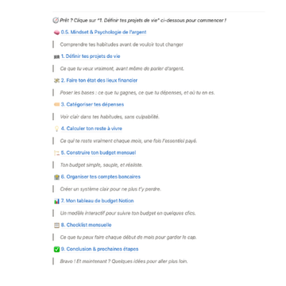
Comprendre tes habitudes avant de vouloir tout changer. C'est là que la plupart des méthodes échouent : elles sautent cette étape.
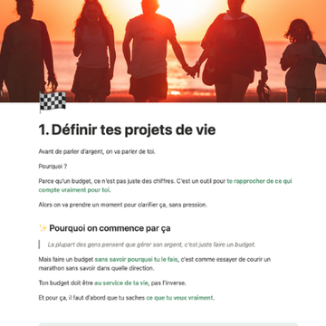
Ce que tu veux vraiment, avant même de parler d'argent. Ton budget doit servir ta vie, pas l'inverse.
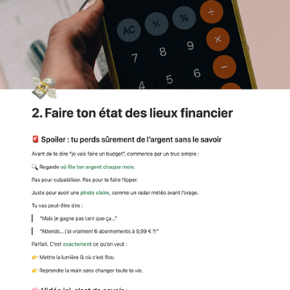
Poser les bases : ce que tu gagnes, ce que tu dépenses, et où tu en es. Une photo claire de ta situation.
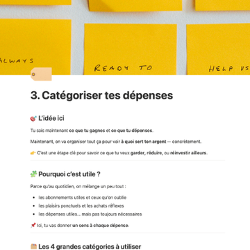
Voir clair dans tes habitudes, sans culpabilité. Savoir où part ton argent change tout.
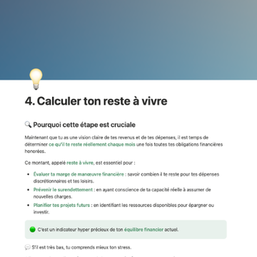
Ce qui te reste vraiment chaque mois, une fois l'essentiel payé. Le chiffre le plus important de ton budget.
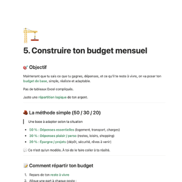
Ton budget simple, souple, et réaliste. Inspiré de la méthode 50/30/20, adapté à la vraie vie.
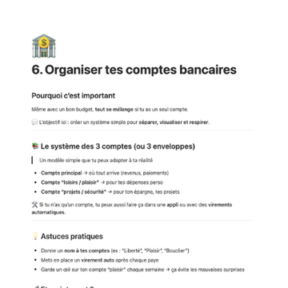
Un système clair pour ne plus t'y perdre. Chaque compte a un rôle, chaque euro a une destination.
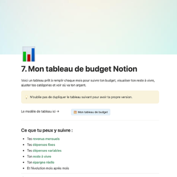
Un modèle interactif prêt à l'emploi. Tu dupliques, tu remplis, tu suis ton budget en quelques clics.
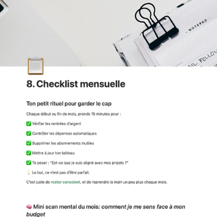
Ce que tu fais chaque début de mois pour garder le cap. 5 minutes, pas plus.
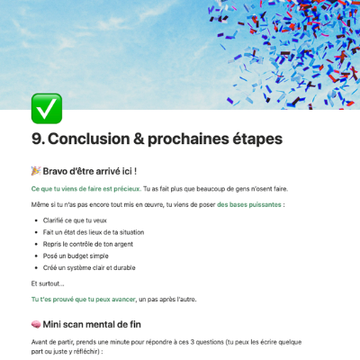
Bravo, tu as ton système. Maintenant, on le fait vivre.
Un outil de prise de conscience de tes dépenses. 7 jours pour comprendre tes automatismes.
Un suivi mensuel visuel sur Notion. Tes chiffres, tes catégories, tes progrès. En un coup d'œil.
Qui suis-je
42 ans, père de deux filles, freelance dans le web. Pendant des années, j'ai vécu ce que tu vis peut-être : le stress de l'argent, le flou en fin de mois, cette impression que tout file entre les doigts.
J'ai testé des tableurs, des applis, des méthodes trouvées en ligne. Rien ne tenait. Alors j'ai construit mon propre système, en appliquant ce que je sais faire : simplifier, structurer, automatiser. Ça a tout changé.
Mon Budget Simple, c'est ce système. Pas de jargon financier, pas de leçon de morale. Juste un outil clair, créé par quelqu'un qui a vécu le problème et qui a trouvé ce qui marche.
"Le jour où j'ai découvert un découvert de 200€ alors que je venais de recevoir mon salaire, j'ai compris que le problème n'était pas combien je gagnais, mais comment je gérais."
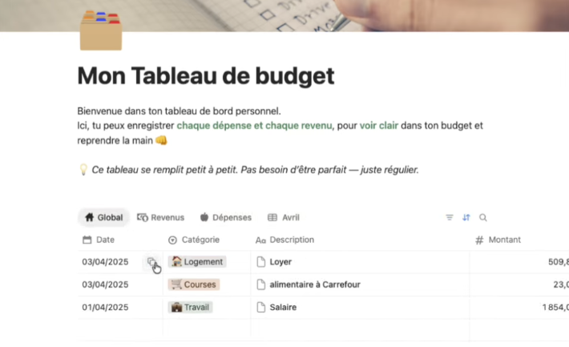
10 étapes pour reprendre ton budget en main
paiement unique · accès à vie
Paiement sécurisé par Stripe
Si tu identifies ne serait-ce que 40€ d'économies par mois (la moyenne est entre 30 et 80€), le guide est rentabilisé en 5 semaines. Après, c'est du bonus chaque mois.
Tu n'as pas besoin d'attendre d'être dans une meilleure situation. Le Guide Express est là pour t'aider à y arriver, pas après. 1 heure de mise en place, et tu reprends le contrôle.
Je reprends mon budget en main39€ · Accès immédiat · Paiement unique